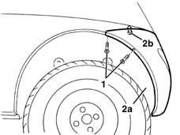
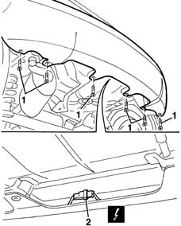
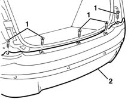

7210E66 R.R. REAR BUMPER
- Path
- Procedures > 72 PANELS AND FRAME > 7210 REMOVING REFITTING > 7210E external parts > 7210E66 R.R. REAR BUMPER
- Kind
- repair procedure (removal / refitting; the operation number is the code)
- Applies to
- all engines; all production periods
- Interactive page
- https://sloeber94.github.io/elrnDB-lYpsln/en/#/2429742
Applies to: all engines; all production periods
 Removing
Removing
 Refitting
RefittingPlace the car on the ramp.
5540A44 l/h or r/h tail light (one) - r+r (right and left)
1. Raise the vehicle and unscrew the side screws from both sides.
2. Move trim (2a) slightlly and unscrew bolt (2b).

Applies to: all engines; all production periods
1. Unscrew the lower bolts.
2. Disconnect the electrical sensors from the obstacle detection sensors.
 | Name | Connector |
|---|---|---|
2 | Parking sensor coupling |

Applies to: all engines; all production periods
1. Lower the vehicle and unscrew the upper bolts.
2. Remove the bumper.

Applies to: all engines; all production periods
If necessary, remove the following parts.
5580H36 parking sensor system rear sensor (1), lh or rh - r r
Applies to: all engines; all production periods
Refitting
RemovingCheck that the rear bumper is undamaged.
Position the bumpers and check alignment.
Tighten the upper bolts.
Raise the vehicle and connect the electrical connection.
Tighten the lower bolts.
Tighten the side bolts and arrange the trim.
5540A44 l/h or r/h tail light (one) - r+r (right and left)
Topics linked from this page (4)
- 5540A44 l/h or r/h tail light (one) - r+r
- 5580H06 wiring of parking sensor system r r
- 5580H36 parking sensor system rear sensor (1), lh or rh - r r
- D89 Parking sensor coupling